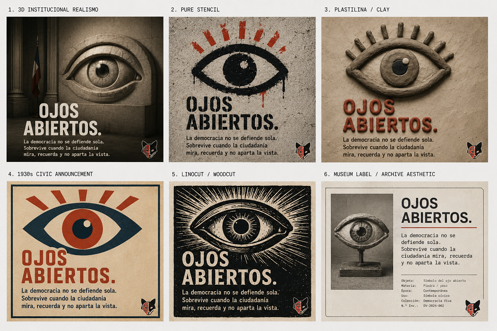
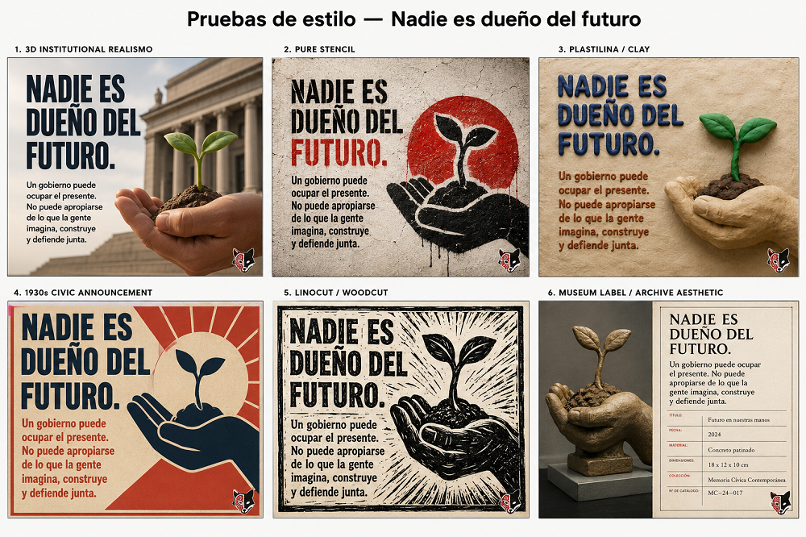

Cartelería de resistencia
Inicio > Cartelería de resistencia
Cartelería de resistencia
La cartelería de resistencia reunida en esta página es una colección abierta de afiches para descargar, imprimir, compartir y poner en circulación. Sus piezas trabajan con frases breves, símbolos reconocibles y una misma insistencia democrática: el poder público no es propiedad privada, la memoria no pertenece al olvido, el cuidado sostiene la vida común y ningún futuro debería ser entregado sin disputa.
La serie reúne carteles sobre instituciones, vigilancia ciudadana, archivo, educación, salud, alimento, territorio, crítica pública, miedo, propaganda y organización colectiva. Algunos hablan desde la silla vacía, el ojo abierto, la llama pequeña o la caja de archivo; otros desde la escuela encendida, la biblioteca, la olla común, la grieta, la raíz o la mesa compartida. Todos proponen lo mismo: devolver ciertas palabras al espacio público para que puedan ser vistas, discutidas y usadas.
Los afiches están disponibles para usos educativos, comunitarios, culturales y no comerciales, siempre que se conserve su integridad visual y se mantenga el crédito correspondiente. Son materiales modestos, reproducibles y abiertos: pequeños artefactos gráficos para paredes, aulas, bibliotecas, centros culturales, asambleas, conversaciones y otros lugares donde la vida pública todavía respira.

Serie 01 | La silla vacía
La silla vacía recuerda que ningún cargo es propiedad privada. Una silla institucional puede estar ocupada por alguien durante un tiempo, pero nunca deja de ser pública: pertenece a la ciudadanía, exige responsabilidad y marca el límite entre gobernar y adueñarse del poder.

Serie 02 | El ojo abierto
El ojo abierto recuerda que la democracia no se defiende sola. Sobrevive cuando la ciudadanía permanece atenta, cuando la memoria pública sigue activa y cuando la gente se niega a apartar la vista de lo que el poder hace en su nombre. No es un símbolo de vigilancia desde arriba, sino de vigilancia desde abajo: la atención de comunidades, bibliotecas, archivos, escuelas, calles y personas comunes que entienden que el silencio y la distracción le sirven al poder autoritario.

Serie 03 | El futuro en nuestras manos
El futuro en nuestras manos recuerda que ningún gobierno es dueño de lo que todavía no ha llegado. Un gobierno puede ocupar el presente, pero no puede apropiarse de lo que la gente imagina, construye, cuida y defiende junta. La semilla que germina es una imagen cívica de posibilidad: frágil, compartida y viva solo cuando se protege colectivamente.